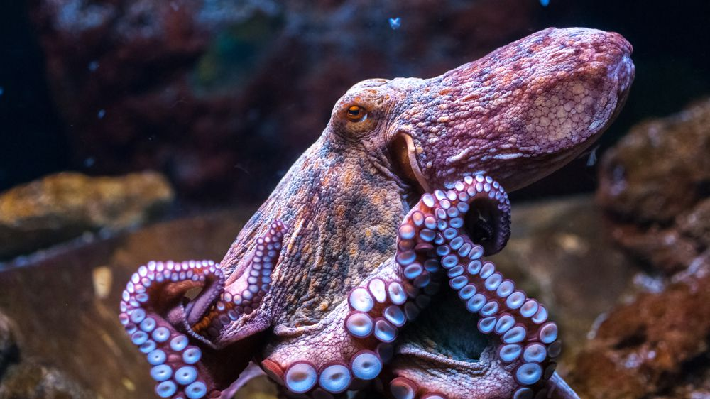
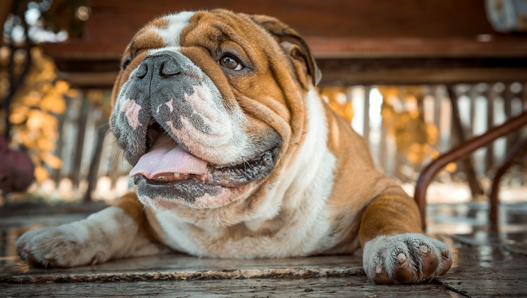

Animal Wiki
What animal would you like to learn about today?
- an octopus has three hearts
- octopuses have short life spans, typically about a year
- no matter what, when ocotpuses mate, they die soon after

- the arctic fox has the warmest pelt of any animal found in the Arctic, enduring temperatures as low as -70 degrees celcius
- arctic foxes are monogamous animals
- the arctic fox does not hibernate and their fur changes colors with the seasons

- english bulldogs were bred to fight bulls
- they are not great swimmers
- everyone loves them
